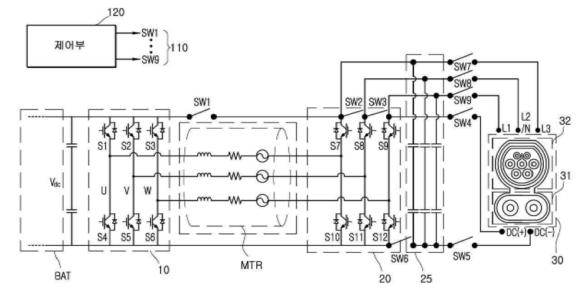

Charging systems
Efficient AC–DC and DC–DC conversion for on-board charging and external charging interfaces.
KAIST INTEGRATED POWER CIRCUIT LAB
APPLICATIONS
Power conversion for charging and electric mobility
Electric vehicles use power converters to charge the traction battery, supply low-voltage electronics and exchange energy between electrical subsystems. Research spans on-board chargers (OBCs), low-voltage DC–DC converters (LDCs), charging systems and integrated power conversion.
Explore projects
RESEARCH OVERVIEW
Efficient AC–DC and DC–DC conversion for on-board charging and external charging interfaces.
Conversion between the high-voltage battery and auxiliary power rails, with attention to losses, thermal load and packaging.
Reuse and coordination of existing vehicle hardware to support additional charging and energy-transfer functions.
RESEARCH IN PROGRESS
Project snapshot · June 2026
PROJECT 01
Research partner
The project investigates vehicle-to-vehicle (V2V) fast charging. It addresses losses from repeated voltage conversion and the weight and handling difficulty of high-current charging cables, with the goal of making energy sharing between vehicles easier to use.
Analyze charging architectures, patents and literature to identify practical limitations and improvement opportunities.
Compare boost and buck–boost arrangements that reuse drivetrain hardware or add relays and power devices.
Evaluate selected circuits under common conditions and develop improvements to conversion and system architecture.
